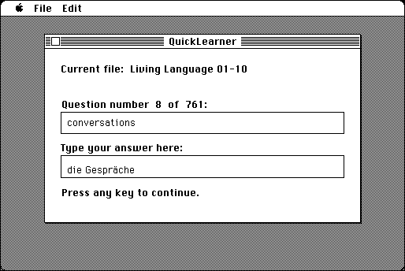

Download
QuickLearner.zip (61K) QuickLearner 2.7 repackaged into a zipped hfs disk image and checksum file. The disk image can be mounted with Mini vMac.
QuickLearner.sit.hqx (82K) QuickLearner 2.7 in the original format.
copyright: Cliff Harris
mod date: Apr 30, 2000
license: Freeware
official url :
Freeware Written by Cliff Harris
A “simple little text-based flashcard application.” You “can create your own lessons.”

If you find these downloads useful, please consider helping the Gryphel Project, which hosts them.
Here are the md5 checksums for the downloads, signed with Gryphel Key 5:
--------- GRY SIGNED TEXT --------- c221804b3fc097a02b1eb445210f683c QuickLearner.zip b2cd48f25c5bd8a92a58219e244adb6f QuickLearner.sit.hqx ------- BEGIN GRY SIGNATURE ------- Gry/4Xa8CFcUzxdN/OX7aO9B6fRYpGKOSXfFdqFnCBx9PlrQcHUhUbjqHMmM3Ume BE8A/c+v+OKnHIEJqv2iP9XqpVVIJ01Mv7qvPZ6cPe4y3Os4mb0du+wt+wcQ9U/Y 6RGiOb+ft+wIYEeV4QkarBGDuDyG0sNpQPMC4hqEaaa+MlAhfomRPd9f8xi5EVDp -------- END GRY SIGNATURE --------